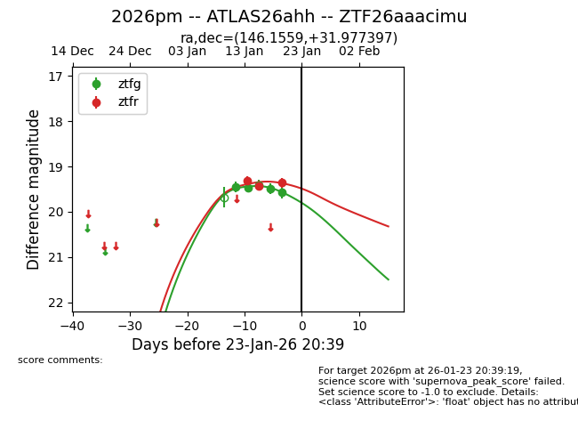
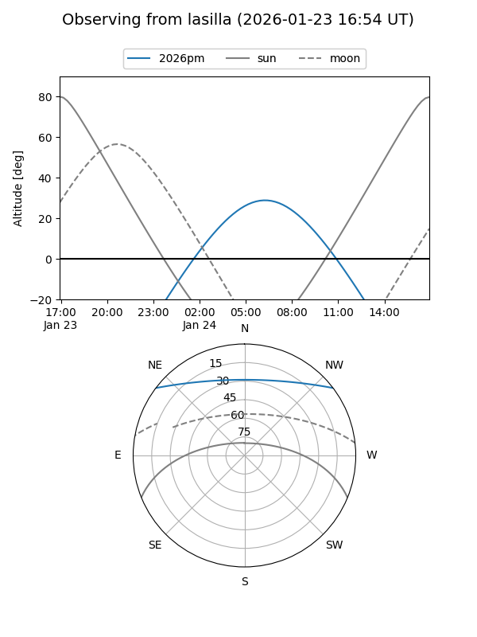
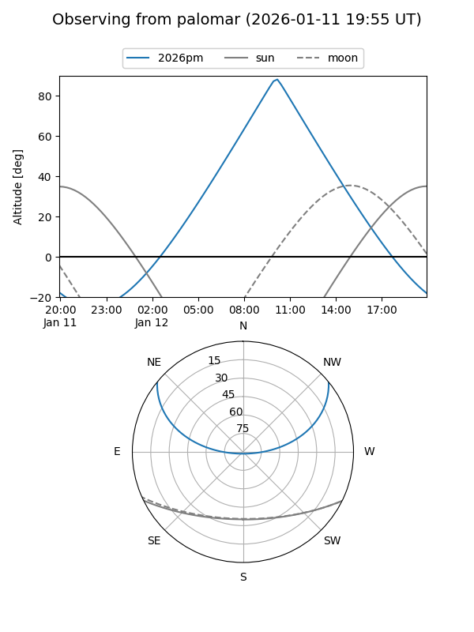
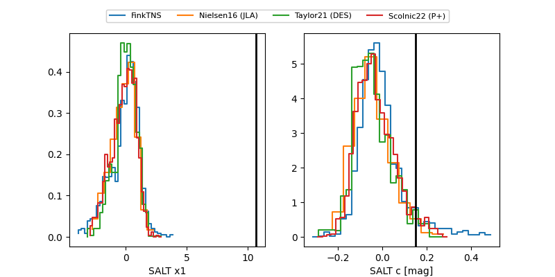

2026pm
Target 2026pm at 2026-01-14 16:35
Aliases and brokers:
FINK: link
Lasair: link
ALeRCE: link
TNS: link
YSE: link
alt names
ZTF26aaacimu (ztf,fink_ztf)
2026pm (tns,yse)
ATLAS26ahh (atlas)
Coordinates:
equatorial (ra, dec) = 146.1559,+31.97740
equatorial (HMS+DMS) = 09:44:37.41,+31:58:38.63
galactic (l, b) = (194.4735,+49.39357)
Flags:
Photometry:
last ztfg=19.46, ztfr=19.31
2 ztfg, 1 ztfr detections
Lightcurve

Visibility


Additional plots
